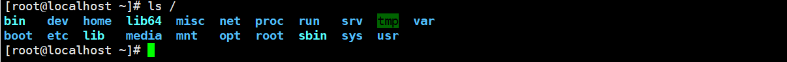

Linux系统目录结构(FHS)
Linux的文件系统层级结构：FileSystem Hierarchy Standdard（简称FHS）定义了在Linux系统中的目录结构和目录内容，即让用户了解到已安装软件通常放置哪个目录下。类似于Windows操作系统中C盘的文件目录，FHS采用树形结构组织文件，定义了系统中每个区域的用途、所需要的最小构成的文件和目录，同时还给出了例外处理和矛盾处理。
文件系统的目录结构
在Linux系统中，所有的目录和文件都是由**/**(根目录)开始的，然后再一个一个分下来，通常我们将这种配置方式称为目录树，图中画出了Linux系统目录大致情况

| 文件和目录被组织成一个单根倒置树结构 |
|---|
| 文件系统从根目录下开始，用“/”表示 |
| 根文件系统(rootfs): root filesystem |
| 标准Linux文件系统(如: ext4) ，文件名称大小写敏感，例如: MAIL,Mail, mail,mAiL |
| 以 . 开头的文件为隐藏文件路径分隔的 / |
| 文件名最长255个字节 |
| 包括路径在内文件名称最长4095个字节 |
| 蓝色–>目录 绿色->可执行文件 红色–>压缩文件 浅蓝色–>链接文件 灰色–>其他文件 |
| 除了斜杠和NUL,所有字符都有效.但使用特殊字符的目录名和文件不推荐使用，有些字符需要用引号来引用 |
| 每个文件都有两类相关数据: 元数据: metadata，即属性，数据: data，即文件内容Linux的文件系统分层结构: FHS Filesystem Hierarchy Standard |
常见的文件系统目录功能

· /boot 引导文件存放目录，内核文件(vmlinuz)、引导加载器(bootloader，grub)都存放于此目录
· /bin 所有用户使用的基本命令: 不能关联至独立分区，OS启动即会用到的程序
· /sbin 管理类的基本命令: 不能关联至独立分区，OS启动即会用到的程序
· /1ib 启动时程序依赖的基本共享库文件以及内核模块文件(/1ib/modules)
· /1ib64 专用于x86_64系统上的辅助共享库文件存放位置
· /etc 配置文件目录
· /home 普通用户家目录
· /root 管理员的家目录
· /media 便携式移动设备挂载点
· /mnt 临时文件系统挂载点
· /dev 设备文件及特殊文件存储位置
· /opt 第三方应用程序的安装位置
· /srv 系统上运行的服务用到的数据
· /tmp 临时文件存储位置
· /usr universal shared, read-only data
· /var variable data files
· /proc 用于输出内核与进程信息相关的虚拟文件系统
· /sys 用于输出当前系统上硬件设备相关信息虚拟文件系统
· /selinux security enhanced Linux，selinux相关的安全策略等信息的存储位置
本博客所有文章除特别声明外，均采用 CC BY-SA 4.0 协议 ，转载请注明出处！